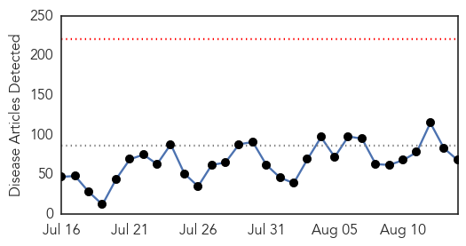

Ebola
30-Day Web Trend
1 alerts, 0 warnings

30-Day Twitter Trend
0 alerts, 0 warnings

Article Locations

Article Confidences

Top Articles:
- 1.000
- First Week With No New Ebola Cases
- 1.000
- Local doctor returns from stint with World Health Organization
- 0.999
- Africa - News and Analysis
- 0.999
- Africa - News and Analysis
- 0.995
- WESLEY PRUDEN: Ebola decline, vaccine good news from Africa
- 0.994
- Liberian President Says Global Ebola Response Fragmented
- 0.993
- Africa - News and Analysis
- 0.992
- 'Unlikely' Ebola cause of Burundian refugee death in Tanzania: UN
- 0.991
- Minister Ngafuan Speaks to Reuters: Says Liberia health system collapsing as Ebola spreads
- 0.990
- Senegal Still Vigilant Against Ebola
- 0.985
- Briefing to the United Nations Security Council on Peace and security in Africa: Ebola
- 0.984
- Idrissa and many others survived as ActionAid fights Ebola
- 0.978
- Sierra Leone lifts last major Ebola quarantine as cases recede
- 0.975
- Philstar Mobile
- 0.974
- US, Others Urge Africa To Take Lead In Addressing Ebola Challenges
- 0.964
- Ebola survivors still struggling to live
- 0.960
- KSA can use space technology to prevent Ebola, says expert
- 0.954
- WHO head at the forefront of global health emergency reforms:Thursday 13 August 2015
- 0.951
- P4DP Launches Study on Role of Liberia’s Traditional Healers
- 0.948
- EDITORIAL: Japan’s first BSL-4 lab can serve as international base to fight infectious diseases
- 0.942
- REPORTER’S DIARY: I thought I had caught Ebola
- 0.920
- WHO calls for better protection of health workers
- 0.919
- WHO calls for better protection of health workers - Xinhua
- 0.918
- World Humanitarian Day: WHO honours health workers, calls for their protection
- 0.912
- The most from the coast
- 0.882
- Ebola May Be Defeated By End Of This Year - WHO
- 0.878
- World Humanitarian Day: WHO honours health workers, calls for their protection - World
- 0.871
- New Malaria Vaccine Decalred Safe and Effective
- 0.848
- WHO Highlights Health Worker Plight In #ThanksHealthHero Campaign
- 0.848
- Chance Ebola Can Be Defeated by End of 2015, World Health Organization Chief Tells Security Council, Urging Sustained Focus to Prevent Future Outbreaks - Sierra Leone
- 0.838
- Better policies are needed to support local adoptions for children orphaned by Ebola
- 0.821
- 'It doesn't make sense': Concerns over enlisting DoD in Ebola response
- 0.795
- How Liberian Govt Cleared Patrick Sawyer To Travel To Nigeria With Ebola
- 0.794
- Sierra Leone lifts last major Ebola quarantine as cases recede
- 0.772
- One-on-one with VP Victor Foh in Eygpt
- 0.769
- ACF ends 8-month Ebola prevention, response project in Bomi
- 0.741
- Guinea vaccine trial to be rolled out in SaLone « Awoko Newspaper
- 0.689
- Quinnipiac University professor back from Africa says funds for Ebola being misused
- 0.685
- World Bank Regional Director Pays Courtesy Call on President Koroma
- 0.608
- The most from the coast
- 0.583
- Couple’s life changed by husband’s Ebola survival
- 0.578
- Catholic-founded charity feeds needy in Third World
- 0.543
- West and Central Africa Region Weekly Humanitarian Snapshot 3 – 10 August 2015 - Nigeria
Top Tweets:
- 0.972
- Sierra Leone Ebola village quarantine lifted - BBC News http://t.co/02Hl2qh1VU ebola EVD
- 0.950
- The Ebola Vaccine We Needed - New York Times http://t.co/VNauJC3UlP ebola EVD
- 0.947
- HSE spent €72k on anti-Ebola kits as virus fears peaked - Irish Independent http://t.co/eRzSQC4KEj ebola EVD
- 0.927
- WHO Ebola report 27965 cases 11298 deaths 880 health care workers infected 512 health care workers dead http://t.co/0uBz5evdHk
- 0.854
- As Ebola cases decline, ZMapp drug trial answers unclear - CBC.ca http://t.co/7tVIc995V0 ebola EVD
- 0.822
- Senegal Still Vigilant Against Ebola - Voice of America http://t.co/V8VTcdvKTB ebola EVD
- 0.813
- A protective Ebola vaccine - http://t.co/z2Rjnutn9L http://t.co/cke66mfc6Q ebola EVD
- 0.781
- Quinnipiac University professor back from Africa says funds for Ebola being ... - New Haven Register http://t.co/pg0fsSb3fF ebola EVD
- 0.775
- ZMapp: Is It Already Too Late For This Experimental Ebola Drug? - Huffington Post Canada http://t.co/WUvppgiMYb ebola EVD
- 0.732
- Sierra Leone Ebola village quarantine lifted - BBC News http://t.co/DxrdHPwXYu
- 0.695
- According to doctors working with, Ebola survivors are experiencing lingering health complications http://t.co/gAZmY7HFiP
- 0.684
- New report looks at public perceptions of governance and the Ebola outbreak response in Liberia http://t.co/vw4hMx5R7R
- 0.677
- Liberian President Says Global Ebola Response Fragmented - http://t.co/NaiI6Jl8yj http://t.co/jPohxdAJip ebola EVD
- 0.619
- 14 Aug - news pouch on avianflu avianinfluenza Ebola EbolaResponse MERS is here: http://t.co/xi8GUyjXPP
- 0.585
- The Ebola Vaccine We Needed - New York Times http://t.co/tpSPvSaInB
- 0.529
- Attention world, the Ebola fight isn't over http://t.co/4wqLoMLcKI via
- 0.520
- RT: African health workers in the fight against Ebola ASEOWA https://t.co/8r2CB…
Unknown
30-Day Web Trend
0 alerts, 0 warnings

30-Day Twitter Trend
0 alerts, 0 warnings

Article Locations

Article Confidences

Top Articles:
- 0.990
- Is Lyme disease more widespread than thought? CDC thinks so; area experts aren't so sure
- 0.976
- 134 Cases Recorded, Mostly Linked to Pork
- 0.966
- Tainted drinking water plays important role in waterborne disease
- 0.963
- Patient being tested for possible case of Middle East Respiratory Syndrome
- 0.958
- Yosemite National Park
- 0.945
- How Did Cryptosporidium Find its Way into the Lancashire Water Supply?
- 0.934
- Legionnaires' disease returns to former 'outbreak' site
- 0.932
- Cleveland hospital: Ohio woman dies of Legionnaires’ disease
- 0.922
- Bronx Legionnaires’ outbreak under control, not gone in NYC
- 0.917
- Chicago Tribune
- 0.917
- Chicago Tribune
- 0.917
- Chicago Tribune
- 0.909
- Chickenpox: Symptoms, Causes, Diagnosis
- 0.905
- Mono vaccine effective in animal trials
- 0.872
- Brain-eating amoeba kills lake swimmer
- 0.866
- Oklahoma man dies from brain-eating amoeba
- 0.856
- Tick-ing Time Bomb: Lyme Disease Conquers New Territory
- 0.854
- Encephalitis kills 3 in Garo hills
- 0.851
- Bird flu spreads to third location in Ivory Coast
- 0.848
- South Sudan: On pace for a second, exceptionally severe malaria season
- 0.817
- Study of global disease outbreak uses human waste
- 0.792
- More nurses diagnosed with tuberculosis at Portimão Hospital
- 0.789
- Indiana health officials investigate E. coli reports
- 0.781
- Family of child sickened by salmonella sues over tainted hog meat
- 0.767
- Blue-green algae poses threat to US water systems
- 0.763
- No live animals can be taken to Bulgaria’s Rila Monastery and back
- 0.761
- Three new African swine fever cases confirmed in Lithuania :: The Baltic Course
- 0.750
- Toxic Algae is a Threat to Our Water
- 0.734
- China's Rare Patients Dancing for Rare Awareness
- 0.734
- Do's and don'ts of antibiotics for common conditions
- 0.704
- UN health agency kicks-off campaign honouring world’s health workers
- 0.703
- Roundup: Lithuania struggling to curb African Swine Fever
- 0.687
- S. Sudan suspends peace talks despite sanctions threat
- 0.687
- IMF praises Spanish economic rebound, flags growth concerns
- 0.687
- In photos: The US and Cuba’s divided half-century
- 0.687
- Media circus at Tel Aviv 'beach day’ in Paris
- 0.687
- Kerry oversees raising of US flag at embassy in Havana
- 0.687
- Japanese prime minister expresses ‘profound grief’ for WWII dead
- 0.687
- Greek lawmakers approve third bailout deal, Tsipras faces confidence vote
- 0.687
- Eurogroup approves third bailout for debt-ridden Greece
- 0.685
- Sudan Vision Daily
- 0.656
- Wolf River Blasto cases up to 13
- 0.654
- Wet weather blamed for record human plague cases in Colorado
- 0.651
- Africa celebrates one year without polio — UN
- 0.649
- Sorry, deze pagina kon niet gevonden worden.
- 0.639
- Early Disease Detection Protects Countries From Disaster
- 0.628
- Animas River open for recreational use, sheriff said
- 0.624
- Alabama boys dramatically fall behind national average for receiving HPV vaccine
- 0.615
- GlaxoSmithKline shuts down its manufacturing plant in Zebulon following bacterial outbreak
- 0.613
- Living on hope Sabuta's fight against HIV
Showing top 50 articles...
Top Tweets:
- 0.694
- RT: FLU SCAN: Global AI outbreaks, flu diversity in Latin American swine http://t.co/wkArIk1aZt
- 0.602
- RT: Un lago dentro de un cráter, en Islandia. Foto de Antony Spencer http://t.co/Jdg7gH89yw
- 0.584
- De la duda nace el conocimiento, de la duda emana la sabiduría. De adulto dócil no se puede dudar, no se puede cuestionar. (2/5)
- 0.566
- Saudi Arabia reports +4 MERS cases in the Riyadh outbreak and one death. Link not seen for one of the cases yet. http://t.co/QthuDYoWFh
- 0.546
- El hecho de que existen mosquitos significa que Jehová no quería que fuéramos completamente felices.